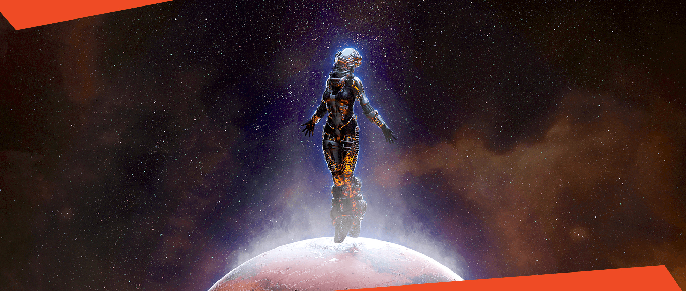
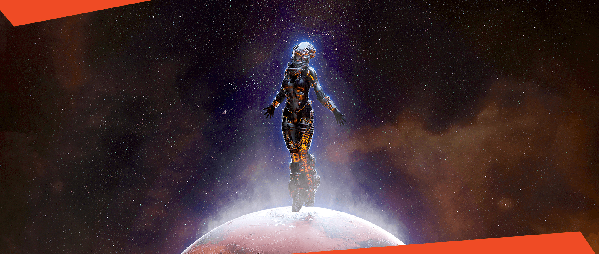
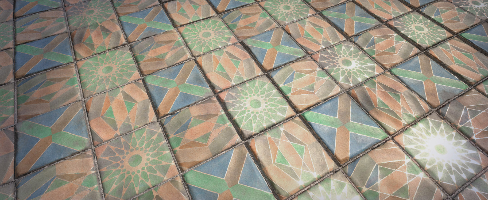
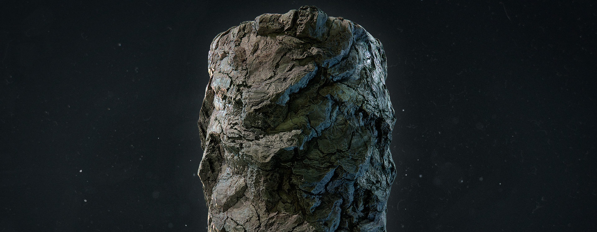
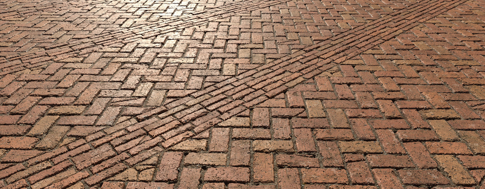

MATERIAL AUTHORING TOOL
Art by Eugene Golovanchuk
Art by Eugene Golovanchuk
Substance Designer is the Ultimate 3D Material Authoring and Scan Processing Tool.
It has become the standard in the entertainment industry for PBR material authoring.
Create materials with full control and infinite variations.
Edit complete texture sets instantly and produce Substance textures and MDL materials that will be directly handled in your renderer or game engine.
Substance Files (.sbsar)
Create Substance files tweakable in-context
Tileable textures
Produce tileable textures up to 8K size with 32 bits floating
Materials
Produce MDL materials for Iray, V-Ray and Adobe Felix
Process scans thanks to filters and tools in an adapted to photogrammetry workflow.
Substance Designer features a complete set of tools and filters including: Crop Tool, Color Equalizer Tool, Extract Channels filters (Multi-angle to Albedo, Multi-angle
to Normal, Normal to Height), Smart Patch Clone Tool, Smart Auto Tile Tool.
Import
Use the Substance material or export the textures to any renderer, game engine, DCC tool or portfolio site.
Tile Floor by Rogelio Olguin
Import procedural sbs and sbsar files, hand-painted images, photographs, scans and geometry (.fbx & .obj). No need to worry about tiling, either – Substance Designer
handles it automatically.
Find physically based, high resolution and tweakable assets for
texturing.
Download and share community-created content under Creative
Commons 4.0 "Public License".
Rock by Imanol Delgado

Use the real-time PBR viewport to preview your work exactly as it appears in Unity and Unreal. Match any other game engine via custom shaders.
Create photo-realistic renders with Iray path-trace technology while working, embellish your work with Yebis post-production effects, and share portfolio-ready materials
directly on ArtStation.
Substance Designer features 4 graphs types: Tiling textures, MDL materials, Math Functions and Noise Editor. Edit complete texture sets instantly with the
procedural node-based non-linear workflow. Want to change something while you’re working? Make changes to any previous step while keeping your current
work intact.
Node-based Graphs
MDL materials
Math Functions
Noise Editor
Tiling Textures
MDL Graph
Math Function
Noise Editor
Combine a large number of pre-set filters and tools for Procedural and Hybrid Workflows.
Access and modify the sources of all filters.
Cobblestone Herringbone by Josh Lynch
Bake quickly and easily with a complete set of bakers. Create non-uniform (non-square) bakes up to 8K resolution with Substance Designer.
The bakers include: AO, normal, ID, height, curvature, position, polypaint, Bent Normals, Color Map, UV to SVG, Opacity Mask, Thickness, Transfered Texture, World
Space Direction, World Space Normals.
Substance Automation Toolkit is an add-on allowing you to empower your pipeline.
"Few Applications have transformed my workflow and creativity as much as Substance Designer. It’s design
gives artists full control over their own tool-sets and automation opportunities, which only leads to deeper
technical understanding and greater creative expression. In today’s production environment, it’s simply hard
to imagine a workflow without Substance."
- Bradford Smith, Senior Texture / Material Artist, Epic Games
"Substance Designer changed my approach to creating materials for high-end VFX shots."
– Marc Austin, Lead TD Generalist at Double Negative
"Iteration in the early concept phase is something our designers want and Substance provides the flexibility to
do it."
– David Nikel, Digital Model Manager at Hyundai California Design Studio
"Substance Designer is at the heart of my material workflow."
– Scott de Woody, Firmwide Creative Media Manager, Gensler
Polycount Greentooth Awards
2017 Winner
Exceptional Software and Exceptional Polycounters
Polycount Greentooth Awards
2017 Winner
Exceptional Software and Exceptional Polycounters
MAKING INCREDIBLE MATERIALS WITH DANIEL THIGER AKA "DETE"
Daniel Thiger is an incredible artist who started an ArtStation account exclusively dedicated to Substance Designer creations. With increasing demands from the community, we just had to ask him more about his work!
CHRIS HODGSON, ONE WITH THE SUBSTANCE
Chris Hodgson can directly read the Matrix code: his ability to interpret patterns and reproduce them via Substance Designer is simply impressive. Read the full article and learn some tricks during the process!
THE SUBSTANCE ART OF PETER KOLUS
Peter Kolus makes some incredible renders of shoes, and we had the pleasure of interviewing him about how he did it. Read the full article.
SUBSTANCE FOR ARCHITECTURE WITH GASTON SUAREZ PASTOR
Gaston Suarez Pastor, a 3D artist specializing in architectural visualization, uses Substance Designer and the Corona renderer to create stunning archviz renders. Read the full article.